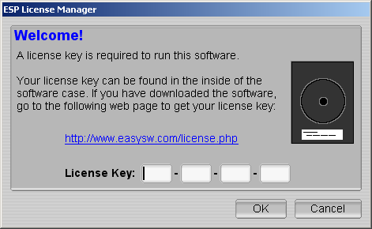

Installing HTMLDOC
Requirements
HTMLDOC requires approximately 4MB of disk space and one of the following environments:
- Microsoft Windows® 2000 or higher
- MacOS® X 10.2 or higher
- Linux 2.4 or higher
- Solaris® 7 or higher
HTMLDOC may run on other environments, but we only provide packages for those listed above.
Installing HTMLDOC on Microsoft Windows
Insert the HTMLDOC CD into your CD drive and wait for the setup window to appear. If it does not appear, double-click on the My Computer icon and then double-click on the CD icon. The setup wizard will guide you through the rest of the installation.
Installing HTMLDOC on MacOS X
Insert the HTMLDOC CD into your CD drive and wait for the CD icon to appear on the desktop. Double-click on the CD icon and then double-click on the Install icon. The setup wizard will guide you through the rest of the installation.
Installing HTMLDOC on Linux
Double-click on the CD icon and then double-click on the htmldoc-linux-intel.rpm icon or run the following command to install HTMLDOC on Linux:
rpm -i /mnt/cdrom/htmldoc-linux-intel.rpm ENTER
Installing HTMLDOC on Solaris
Run the following command to install HTMLDOC on Solaris SPARC:
pkgadd -d /cdrom/htmldoc/htmldoc-solaris-sparc.pkg ENTER
Run the following command to install HTMLDOC on Solaris Intel:
pkgadd -d /cdrom/htmldoc/htmldoc-solaris-intel.pkg ENTER
Licensing HTMLDOC
The first time you run HTMLDOC, a license dialog box will appear. Click on the Update License button that is found above the Software License Agreement.

The ESP License Manager window appears and asks for your license key. If have a label that says "License Key", enter the 16-digit license key that is on the label. Otherwise, open the specified URL in your web browser to get your license. After entering the license key, click the OK button and then the Close button to start using HTMLDOC.

Running HTMLDOC
Running HTMLDOC on Microsoft Windows
Click on the Start Menu button and choose HTMLDOC from the HTMLDOC menu under the All Programs menu.
Running HTMLDOC on MacOS X
Click:
Applications Folder->HTMLDOC
Running HTMLDOC on Linux
Click:
Applications Menu->Office->HTMLDOC
Running HTMLDOC on Solaris
Click:
Applications Windows->ESP->HTMLDOC
Uninstalling HTMLDOC
Uninstalling HTMLDOC on Microsoft Windows
Open the Control Panel window and double-click on the Add/Remove Software icon. A list will be loaded. Scroll down, select HTMLDOC, and click the Remove button.
Uninstalling HTMLDOC on MacOS X
Re-insert the HTMLDOC CD into your CD drive and wait for the CD icon to appear on the desktop. Double-click on the CD icon and then double-click on the Uninstall icon.
Uninstalling HTMLDOC on Linux
Run the following command to remove HTMLDOC from Linux:
% rpm -e htmldoc ENTER
Uninstalling HTMLDOC on Solaris
Run the following command to remove HTMLDOC from Solaris:
% pkgrm htmldoc ENTER
HTMLDOC Resources
Free Resources and Help
The HTMLDOC open source web site, a free on-line community for HTMLDOC users, can be found on-line at the following URL:
http://www.htmldoc.org/
Commercial Support
You can ask for help on-line at the following URL:
http://www.easysw.com/support.php
You may also call us during our normal business hours at +1.301.373.9600.
Support for HTMLDOC Basic is limited to installation and licensing questions only.